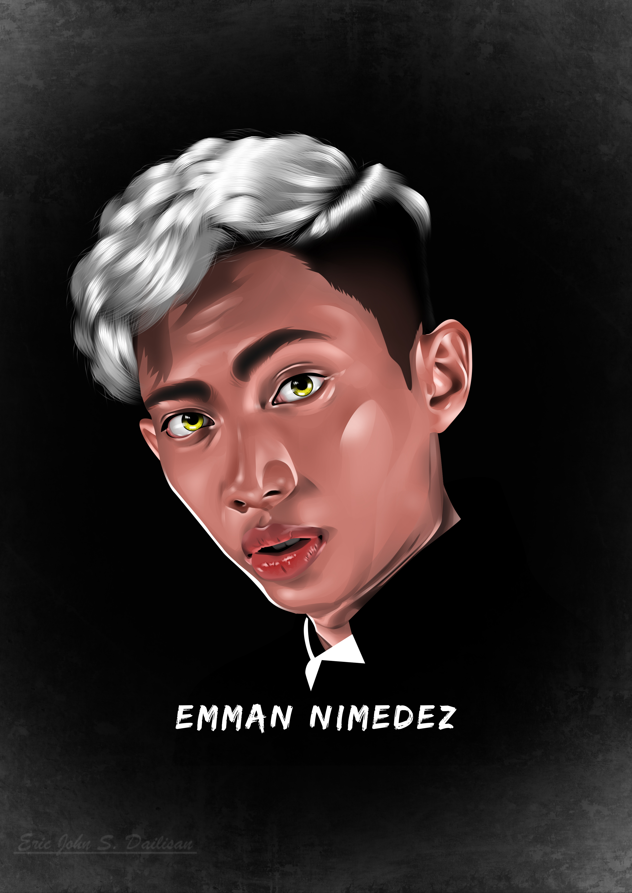

Food Wars!: Shokugeki no Soma (Japanese: 食戟のソーマ, Hepburn: Shokugeki no Sōma, lit. 'Sōma of the Shokugeki')
is a Japanese manga series written by Yūto Tsukuda and illustrated by Shun Saeki. It was serialized
in Shueisha's Weekly Shōnen Jump from November 2012 to June 2019. Its chapters were compiled in 36 tankōbon
volumes published by Shueisha.
One Piece (stylized in all caps) is a Japanese manga series written and illustrated by Eiichiro Oda.
It has been serialized in Shueisha's shōnen manga magazine Weekly Shōnen Jump since July 1997,
with its chapters compiled in 109 tankōbon volumes as of July 2024. The story follows the adventures
of Monkey D. Luffy and his crew, the Straw Hat Pirates, where he explores the Grand Line in search
of the mythical treasure known as the "One Piece" to become the next King of the Pirates.
Bungo Stray Dogs (Japanese: 文豪ストレイドッグス, Hepburn: Bungō Sutorei Doggusu, lit. 'Literary Stray Dogs'),
also abbreviated as BSD, is a Japanese manga series written by Kafka Asagiri and illustrated by Sango Harukawa,
which has been serialized in Kadokawa Shoten's seinen manga magazine Young Ace since 2012. Each character
is named after influential authors throughout history, and their powers are based on said author's books.